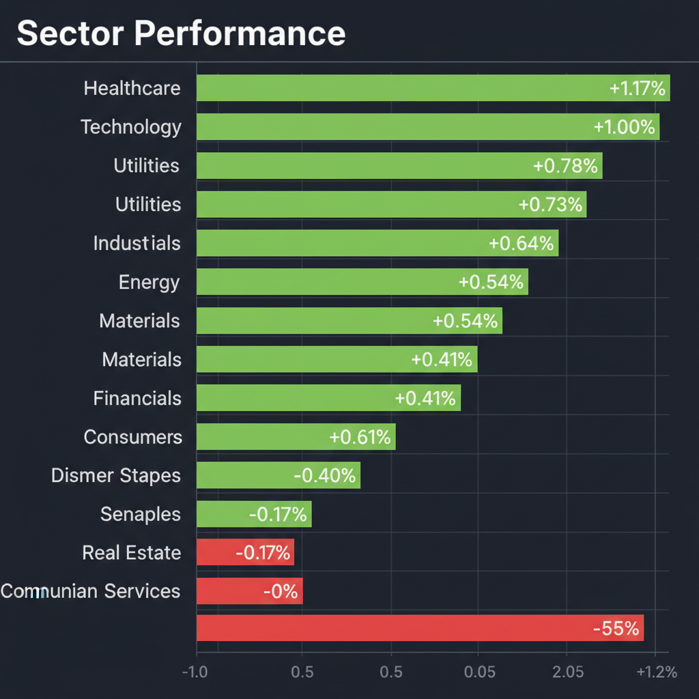
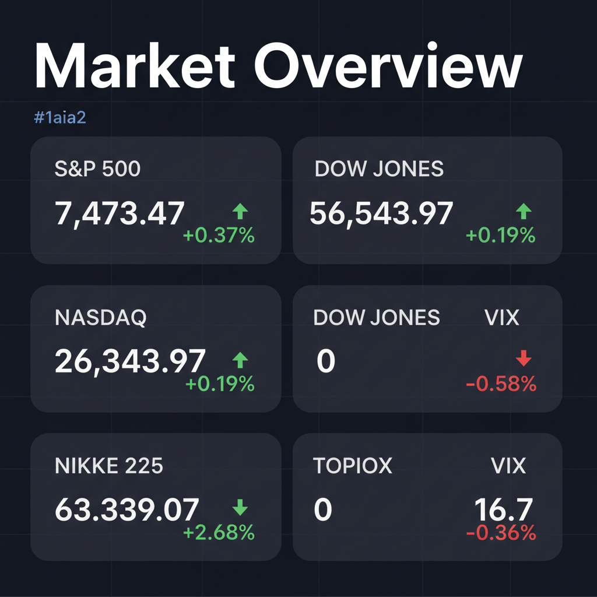

Daily Investment Report - 2026-05-25
Generated: 2026/5/25 7:28:13


投資チームミーティングでの各エージェントの分析と議論を統合し、投資家向けの最終アクションレポートを作成いたしました。
1. エグゼクティブサマリー
- 日米の株式市場は歴史的高値圏で強い上昇トレンドにあるものの、米国消費者の過剰債務や地政学リスクによるインフレ懸念など、実体経済との乖離が危険な水準まで広がっています。
- 表面的なAIバブルの大型株に踊らされず、その裏方として確実に恩恵を受ける「水インフラ」や、独自の価格競争力を持つ「中小型IP株」などの隠れた成長株へ資金をシフトすべき局面です。
- 同時に、金利上昇や原油ショックのテールリスクに備え、現金比率の引き上げや防衛的セクターへのローテーションを伴う厳格なリスク管理を直ちに行う必要があります。
2. 注目銘柄リスト
強気（買い推奨）
- カバー（日本・IP株） [中小型]: 限界費用が低いデジタルコンテンツの海外展開により利益率が飛躍的に伸びるポテンシャルがあり、豊富なネットキャッシュを持ちながら調整が進んでおり割安です。
- しまむら（日本・小売） [中大型]: インフレによる消費者のダウントレーディング（節約志向）の恩恵を受け、全社的な物流効率化により5期連続最高益を叩き出すなど、極めて強いインフレ耐性を持っています。
- メタウォーター（日本・水環境インフラ） [中型]: AIデータセンター特需による米国の50兆円規模の水インフラ市場において、独自の濾過・PFAS対策技術により安定したキャッシュフローを生み出す隠れたAI恩恵銘柄です。
中立（様子見）
- National Vision（米国・アイケア小売） [中型]: EPSが市場予想を上回る好決算を出したものの株価が急落しており、低所得層の債務ストレスによる顧客基盤への悪影響が懸念されるため、底打ちの確認が必要です。
弱気（警戒）
- Vipshop（米国上場ADR・Eコマース） [中型]: 決算は堅調に見えますが、中国マクロ経済の不確実性と米国消費者のセンチメント悪化の板挟みとなっており、低PERに見えても「バリュートラップ」の危険が高い銘柄です。
- Gentell（米国・医療サプライヤー） [小型]: ホルムズ海峡危機による原油価格ショックとサプライチェーンの混乱が製造・輸送コストを直撃しており、利益率（グロスマージン）の急激な悪化リスクを抱えています。
3. セクター推奨ランキング
- 1位: 公益事業（Utilities / XLU）
AI需要拡大に伴う莫大な電力・水インフラ特需の直接的な恩恵を受けつつ、景気減速に対するディフェンシブ性を兼ね備える、現在最もリスクリワードに優れたセクターです。
ホルムズ海峡をはじめとする中東の地政学リスクや、インフレ再燃に対する最も有効なポートフォリオのヘッジとして機能します。
独自のグローバル展開による高い限界利益率を持ちながら、相場全体の調整によりバリュエーションの割安感が際立っている見直し買いのターゲットです。
- 4位: ヘルスケア（Healthcare / XLV）
消費者の財務ストレスに影響されにくい強みがありますが、原油高の影響を避けるため、サプライチェーンの国内回帰（リショアリング）が完了している企業に限定すべきです。
- 5位（最下位）: 裁量消費財（Consumer Discretionary / XLY）
米国消費者の過剰債務（NPO支援が必要なレベル）とインフレ高止まりによる購買力低下の直撃を受けるため、強力なアンダーウェイト（削減）を推奨します。
4. 今週の注目イベント
- 今週前半：ICONの業績開示・決算発表（長期にわたる会計調査終了後、初となる業績開示であり、市場の信頼回復と実態把握に注目）
- 今週半ば：米国・消費者信用残高の発表（クレジットカード債務の膨張と、消費者の財務ストレスの限界点を確認）
- 今週末：米国・新規失業保険申請件数（高値圏の株式市場と、実体経済・雇用環境の乖離の有無をチェック）
- 随時発表：週間原油在庫統計（ホルムズ海峡危機に伴うエネルギー供給の逼迫度とインフレ圧力を確認）
5. リスク要因
- ホルムズ海峡危機を震源とする原油価格の急騰と、それに伴うグローバルサプライチェーン網のコストプッシュ型インフレの再燃。
- 米国消費者の過剰債務と財務的ストレスによる、米国経済の柱である「個人消費」の急減速およびローン・デフォルトの増加。
- 日本国内における2026年度補正予算拡大に伴う国債増発懸念と長期金利の上昇による、成長株のマルチプル・コンプレッション（バリュエーション低下）。
- VIX指数の極端な低位安定（16台）に隠された「リスクの過小評価」と、AI関連の期待値が高すぎる現状からの強烈な巻き戻し（暴落）リスク。
6. アクションアイテム
- 流動性の確保：直ちにポートフォリオの30%〜40%を現金または短期国債（MMF）へ引き上げ、相場の急変（ドローダウン）に備えたバッファーを構築してください。
- 利益確定とローテーション：過熱感のあるAI大型銘柄のポジションを一部利益確定し、地味ながら確実なキャッシュを生む「水・電力インフラ等の中小型株」へ資金をシフトさせてください。
- テールリスクヘッジの構築：VIXが低水準にある現在のうちに、VIXコールオプションや広範な株価指数のプットオプションを安価で購入し、最悪の暴落シナリオに対する保険をかけてください。
- ストップロスの厳格化：テクニカル指標は強烈な買われすぎを示唆しています。保有しているすべての銘柄に対して、直近スイング安値の少し下にストップロス（逆指値）を設定し、急落時の致命傷を機械的に避ける仕組みを作ってください。